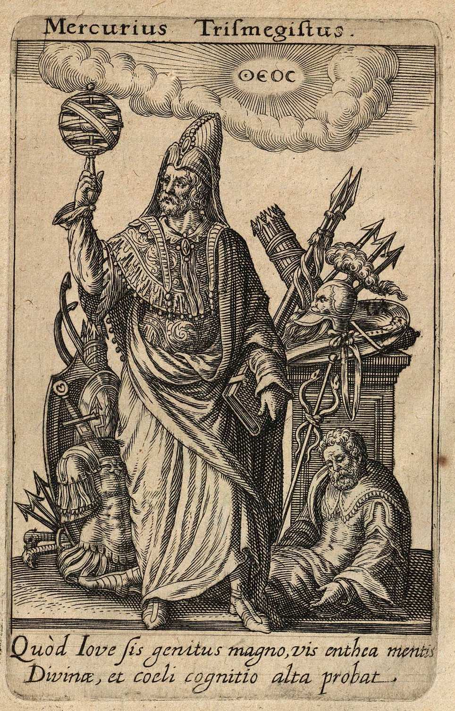
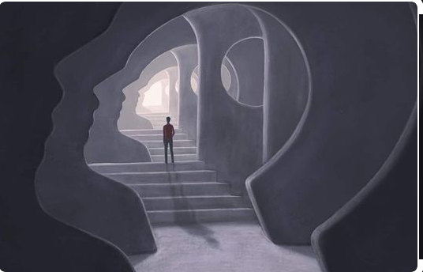

Simbología
Conjunto de símbolos, signos y representaciones que se utilizan en diversas
tradiciones con el propósito de transmitir significados ocultos o espirituales.
Estos símbolos a menudo se asocian con prácticas misticas como, la alquimia, la astrología,
la brujería y la espiritualidad esotérica. A continuación, se presentan un ejemplos de símbolos
ocultistas y su significados:

La simbología y el subconsciente están estrechamente relacionados en el campo de la psicología
y la psicología analítica. Los símbolos tienen un poderoso impacto en el subconsciente humano
y pueden desencadenar una serie de respuestas y significados profundamente arraigados.
Subconciente
La simbología tiene una influencia significativa en el subconsciente humano.
Los símbolos pueden activar recuerdos, emociones y significados profundos que a menudo
no son accesibles directamente a nivel consciente. Esto hace que el estudio
y la comprensión de los símbolos sean herramientas valiosas tanto en la psicología
como en otras disciplinas, como la religión, la publicidad y la terapia.

Arquetipos
Los arquetipos son patrones universales y atemporales de pensamiento, comportamiento y simbolismo
que son inherentes a la experiencia humana. Fueron conceptualizados y popularizados
por el psicólogo suizo Carl Gustav Jung, quien creía que estos patrones son compartidos
por todas las culturas y sociedades a lo largo de la historia. Los arquetipos son considerados
parte del inconsciente colectivo, una capa profunda de la psique humana que contiene
experiencias y conocimientos compartidos.

Los arquetipos son fundamentales en la psicología junguiana y se utilizan en terapia para
explorar y comprender aspectos de la psicología personal y colectiva. También son comunes en
la literatura, el cine y la mitología, ya que proporcionan personajes y narrativas
universalmente reconocibles.